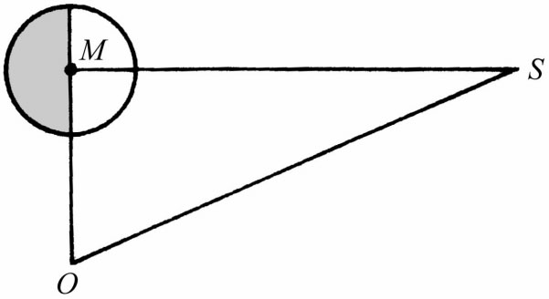
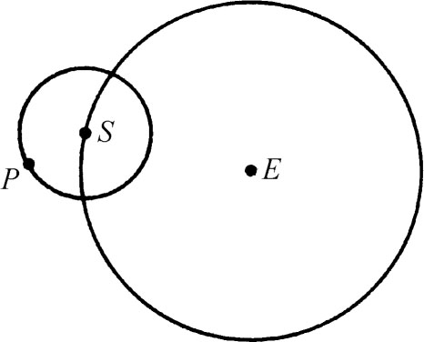
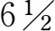
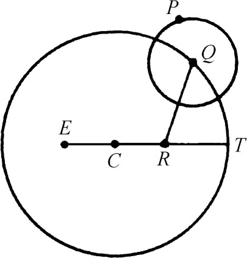

4．希腊的数理天文学
现在来考察希腊人在用数学描述自然的工作方面做出了什么成绩。希腊人所建立的几门科学只是从柏拉图时代起才搞出相当内容和定出方向的。这里虽然只打算回顾天文学但附带也涉及欧几里得几何的一个方面。我们已说过球面几何是为天文学而发展的。几何实际是宇宙学中的一部分。希腊人认为几何原理是体现在宇宙的整个结构中的，而空间是宇宙的主要组成部分。因此研究空间本身以及空间中的图形对于了解宇宙这个较大的目标甚为重要。换言之，几何本身就是一门科学，关于物理空间的科学。
柏拉图虽也充分认识到巴比伦人和埃及人的天文观察材料为数是很可观的，但正是他强调指出对于行星的不规则运动缺乏内在的或统一的理论或解释。欧多克索斯曾一度是柏拉图学院里的学生，他着手解决柏拉图所提出的“整理外观”的问题。他所做的答案是第一个比较完整的天文学说。他写过四本天文书——《镜》（Mirror），《现象》（Phenomena），《八年周期》（Eight-Year Period）和《论速率》（On Speeds），但现今只知道其内容的片断。我们是从这些片断和其他作家所提及的材料知悉欧多克索斯学说的主要精神的。
从地上看到的日月的运动可以粗略地描述成匀速圆周运动。但它们偏离圆轨道的程度大到足以被人观测出来因而需要加以解释。至于从地上所看到的行星运动就更复杂，因在它们运动的任意一圈的过程中，会在短期内倒过来走一段回头路之后再往前走，而且它们在这些路上的速率也是变化着的。
为用几何上简单的圆周运动来说明这些实际的、颇为复杂而且似乎不遵守任何规律的运动，欧多克索斯提出了如下的方案：任一天体都有三四个以地球为中心的同心球，而各个球都绕一轴转动。最里面的一个球是带着那个天体的，而天体则沿着球的所谓赤道运动；就是说转轴垂直于运动天体的圆形路径。不过这最里面的球在绕轴运转之时被下一个同心球这样带动：设想第一球的两轴延长而两端固定在第二个球上，则第二球在绕其轴转动时就带动第一球的轴一起转动，同时第一个球仍绕它自己的轴转动。第二球的轴又随第三球绕其轴旋转而一起转动。欧多克索斯发现用三个球就足以复制出从地上看到的日、月的运动。对于每个行星就要用第四个球，而这第四个球是带着第三个球的轴一起旋转的。每个组合的最外面的球，每24小时内绕一根通过天极的轴旋转一次。欧多克索斯总共用了27个球。他精心选取这些球的旋转轴、旋转速度、球半径，使得他的理论尽量符合当时所有的观测数据。
欧多克索斯的方案在数学上很优美并在许多方面很了不起。用球的组合这个想法本身就很巧妙；而选取球轴、半径和转速，使天体的合成运动符合实际观测数据的工作，则需要在处理曲面和空间曲线（即行星运行路径）方面有极大的数学技巧。
特别值得指出的是，欧多克索斯的理论是纯数学的。他所说的一些球，除了恒星所在的那个天“球”之外，都不是实际观察到的球而只是数学的构想。他说有一些力使这些球转动，但他也并没有设法讲明那是些什么力，他的理论是彻底符合现代精神的，因为如今科学的目标是作出数学描述而不是寻求物理的解释。
欧多克索斯系统有严重的缺点。它不能说明太阳速度的变化，并对其实际路线的描述也稍有错误。他的理论同火星的实际运动根本不相符，同金星运动的符合程度也不能令人满意。欧多克索斯之所以容忍这样的缺点，可能是由于他手头没有足够的观测数据。他也许在埃及只学了一些关于驻点、逆行以及外行星（火星、木星和土星）的运行周期等主要事实。或许又由于这一原因，使他所算得的天体大小和距离的值很粗略。阿利斯塔克说欧多克索斯相信太阳直径是月球直径的9倍。
亚里士多德并不欣赏纯数学的方案，因此他并不满足于欧多克索斯的解决办法。他为设计出让一球推动另一球旋转的实际机构，又在欧多克索斯的球之间增加了29个球，使一球的转动能通过实际接触推动另一球，而使所有球的动力来自最外面的那个球。在亚里士多德的有些著作中把本身运动着的恒星天球作为推动其他各球的第一个动力。在另一些著作中则认为在天球背后有一个不动的推动者。他的56个球把这系统搞得如此复杂，使科学家不能置信，虽然它在中世纪有教养的世俗人士中间还是很风行的。亚里士多德也相信大地是球形的，因为从对称和平衡方面的理由来说需要如此，更因为月蚀时看到的地球在月球上的影子是圆的缘故。
从亚里士多德以后几乎不断有人写天文著作。在奥托吕科斯的著作（第3章第10节）和欧几里得的《现象》（第4章第11节）之后，下一批天文学巨著是亚历山大学者写的。巴比伦人在塞琉西时代所作的观测（叫加尔底亚观测）和亚历山大学者自己测出的数据使原有数据大为丰富和准确。
亚历山大的第一个大天文学者是阿利斯塔克（公元前约310—前230），他在几何、天文、音乐和其他科学分支上学问广博。他所著《论日月的体积和距离》（On the Sizes and Distances of the Sun and Moon）（现尚存希腊文和阿拉伯文手抄本）是第一个测量日月到地球距离和这些天体相对大小的重大尝试。这些计算同时又是说明亚历山大学派注重数量的另一个例子。阿利斯塔克没有三角知识也没有准确的π值（阿基米德的工作出现在他之后），但他把欧几里得的几何用得很得法。
他知道月光是反射光。当恰好半个月球被照亮时，M处（图7.1）的角是直角。在O处的观察者可测出该处的角，于是至少可估算出OM与OS的相对距离。阿利斯塔克测出的角是87°；它的准确到分的值是89°52′。因此他估出太阳离开地球与月球离开地球的距离之比在18到20之间。正确的比是346。

图7.1
求得了相对距离之后，阿利斯塔克就通过从地上看到的日轮和月轮的大小测定它们的相对大小。他得出的结论是太阳比月球大7000倍。这里同实际差得很远；正确的数字是64000000倍。他又求得太阳直径和地球直径之比在19/3与43/6之间；但正确的比约为109。
阿利斯塔克在第一个提出日心说（即地球和行星都围绕固定的太阳作圆周运动）这方面也同样出名。恒星也是固定的，它们看上去好像在转动，实际上那是地球绕轴自转的结果。月球是绕地球转动的。我们今天虽然知道阿利斯塔克的思想是正确的，但它不能为当时的人所接受是有许多原因的。其一是按照亚里士多德所精心阐述的希腊力学（见下）不能说明在一个运动着的地球上能放得住东西。照亚里士多德的说法，重物趋向宇宙中心。只要你承认地球是宇宙的中心，这一原理就可用来说明物体落向地面的运动；但若地球也在运动，那么落体就会掉在后面。托勒玫曾用这个论点来反对阿利斯塔克，并且事实上后人也拿它来反对哥白尼（Nicholas Copernicus），因当时的力学仍是亚里士多德的那一套东西。托勒玫还说运动的地球会把天上的云抛在后头。其次，亚里士多德的力学需要有一种力来使地球上的东西保持运动而又看不出有什么力。但我们不知道阿利斯塔克是怎样回答这些论点的。
另一个反对阿利斯塔克的论点是：如果地球在动，那它同恒星的距离就会变，而看起来却并没有变。对此阿利斯塔克给予了正确的反驳；他说恒星天球的半径是如此之大以至地球轨道相形之下小得微不足道。阿利斯塔克的日心说之所以被许多人所摒弃是因为他把地上的朽物与天体的不朽之物视为等同。行星绕日作圆周运动之说当然是不能令人满意的，因为运动情况实际上要比这复杂得多。但日心说的思想是可以改进的，而哥白尼以后确实作了这种改进。但这对希腊人的思想来说未免太激进了。
定量的数理天文学的奠基人是阿波罗尼斯。人们称他为厄泼色隆（希腊字母ε的读音），因ε这个记号常被人用来表示月球，而阿波罗尼斯的大部分天文学是研究月球运动的。但在考察他的工作以及与之有密切关系的希帕恰斯和托勒玫的工作以前，我们先要考察一下希腊人在欧多克索斯和阿波罗尼斯所处时代之间搞出来的一套基本天文方案，即本轮（epicycle）和均轮（deferent）的方案。按照这套方案，一行星P在中心为S的一个圆周上作匀速运动（图7.2），而S本身则在以地球E为中心的一个圆周上作匀速运动。S所沿着运动的圆叫均轮；P所沿着运动的圆叫本轮。对某些行星来说，点S就是太阳，但在其他情形下则只不过是数学上假设的一个点。P与S的运动方向可能相符，也可能相反。太阳和月球的情况就属于后一种。

图7.2
据认为阿波罗尼斯对本轮运动的这套方案以及用来表示行星和日、月运动的细节是彻底知悉的。托勒玫把行星在轨道上停下来并开始逆行的点的确定特别归功于阿波罗尼斯。
希腊天文学的顶点是希帕恰斯和托勒玫的工作。希帕恰斯（死于公元前约125年）沿袭了均轮和本轮的这一套方案，并将其应用于当时所知的五大行星以及日月和恒星的运动。我们是通过托勒玫的《大汇编》获悉希帕恰斯的著作的，但很难区别哪些是属于希帕恰斯的而哪些是属于托勒玫的。希帕恰斯在罗得斯观象台工作35年之后并应用巴比伦人的观测数据搞出了本轮运动理论的细节。他通过适当选取本轮和均轮的半径以及天体在本轮上的和本轮圆心在均轮上的运动速度，使他能把运动的描述加以改进。对太阳和月球的运动的描述他处理得很成功，但对行星的运动只能获得部分成功。自希帕恰斯时代之后，月蚀的时间能准确预报到一两个小时之内，但对日蚀的预报却不那么准。这一理论也可用以说明四季的来历。
希帕恰斯的独特贡献是他发现了岁差（precession of the equinoxes）。为说明这一现象，设地球的旋转轴远及恒星天球。它与恒星天球相交的点每隔26000年转动一圈。换言之，地轴相对于恒星的方向是不断变化的，而且这一变化是周期性的。它在任一时候所指向的那个星叫北极星。上述那个圆圈的直径在地球上的张角是45°。
希帕恰斯还在天文学上作出了其他许多贡献，如观测仪器的制作、黄道角的测定、月球运动不规则性的测量、太阳年日数的改进（他测到365天5小时55分12秒——比近代数字约长

分）以及大约一千个恒星星表的编制等。他求得月地距离与地球半径之比为67.74，而现代的数值是60.3；他算出月球半径是地球半径的1/3，而现代的数字是27/100。托勒玫推广希帕恰斯的工作，进一步对所有天体的数学描述加以改进。他在《大汇编》里所论述的那个推广了的理论，把周转圆和均轮这一套地心说理论作了完整阐释，故后人称之为托勒玫理论。
为使这套几何说法符合观测数据，托勒玫还对周转圆上的运动加上一种变动叫做均匀平化运动（uniform equant motion）。根据这一方案（图7.3），行星沿中心为Q的一周转圆运动，而Q沿以C为圆心的圆周运动，不过这里的C不是地球而是稍偏离一点。为确定Q的速度，他引入一点R使EC＝CR，并使∠QRT匀速增大。这样Q就以匀角速度运动，但不是以匀线速度运动。

图7.3
希腊天文学家所采取的方法和所获得的理解是有彻底现代精神的。亚历山大的希腊天文学家如希帕恰斯和托勒玫都亲自作观测；事实上希帕恰斯并不信赖古代埃及人和（巴比伦）加尔底亚人的观测数据而重新进行观测。古典时代和亚历山大时代的天文学家不仅提出理论，并且也充分认识到这些理论并非真正的设计方案而只不过是能符合观测数据的一种描述。托勒玫在《大汇编》中说(1)，天文学里应力求使数学模型最为简单。这些人也像其他希腊学者一样，并不寻求关于运动的物理解释。关于这一点托勒玫说(2)：“总之，一般说来第一性原理的终因若不是无关紧要便是很难说明其本质的。”不过他自己的数学模型以后却被基督教人士视为只字不可改的真理。
托勒玫的理论提供了第一个相当完整的证据，说明自然是一致的而且具有不变的规律，而且也是希腊人对柏拉图提出的合理解释表观天体运动这一问题的最后解答。在整个希腊时期没有任何一部著作能像《大汇编》那样对宇宙的看法有如此深远的影响，并且除了欧几里得的《原本》以外，没有任何别的著作能获得这样毋庸置疑的威信。
对希腊天文学的这一简短叙述，并未充分显示出即令只是在这里所提到的几位希腊学者工作的深度和广度，并且还略去了其他许多贡献。几乎每一位希腊数学家，包括阿基米德在内，都研究过天文学。希腊天文学是高明而又广博的，并且应用了大量的数学。